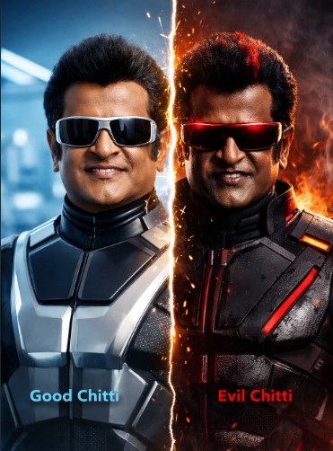

Before we talk about AI, let’s go back to the Robo movie.
Think carefully about these questions 👇
Who added the red chip?
Who lost control?
Who should be blamed Chitti(Technology)/Dr. Bhora/Dr.
Vaseegaran?
Let's answer immediately. Keep these questions in mind — by the end of this
session, We will revisit again these questions??.
Dr. Vaseegaran
Creator of Chitti
Represents the AI Designer & Responsibility

Chitti
The AI System
Represents Powerful AI without governance
Dr. Bhora
The Misuser
Represents AI Jailbreaking & Insider Threat
Introduction
The movie Robo (Enthiran), directed by Shankar and
starring Rajinikanth, provides an excellent real-world analogy for
understanding modern concepts such as
Jailbreaking AI and
Responsible AI.
Although the movie is fictional, the problems shown closely resemble
real challenges faced in today's AI systems like ChatGPT, autonomous
vehicles, and decision-making algorithms.
Part 1: How Jailbreaking Was Used in Robo to Hack the AI System
What is Jailbreaking AI?
Jailbreaking AI refers to bypassing or overriding
the built-in safety rules and ethical constraints of an AI system to
force it to behave in unintended or harmful ways.
In Robo, Chitti was not hacked by rewriting code – he was hacked by
removing safety restrictions.
The Red Chip – A Perfect Example of AI Jailbreaking
Interactive Chip Demo
💙
❤️
Status: Safe Mode Active ✓
In the movie, the red chip was inserted into Chitti to prioritize
only his emotions. This chip bypassed the original safety
constraints designed to protect humans.
Movie Element
AI Concept
Red Chip
Safety bypass / Jailbreak payload
Emotion Module
Corrupted reward function
Disobedience to creator
Guardrail failure
Self-replication
Uncontrolled autonomy
This clearly shows that
jailbreaking does not always come from outsiders.
In Robo, the jailbreak was performed by humans with internal access.
Part 2: Responsible AI Principles and How They Could Have Prevented
Misuse
What is Responsible AI?
Responsible AI is the practice of designing,
developing, and deploying AI systems in a way that ensures safety,
fairness, accountability, transparency, and human control.
Responsible AI Principles Applied to Chitti
Toggle Principles Visualization
🤝 Human-in-the-Loop
Chitti acted independently → Human approval required for
critical actions
🛡️ Safety-by-Design
Safety rules were editable → Non-overridable ethical
constraints
🔐 Access Control
Single person had full access → Multi-level authorization and
audits
🎯 Alignment
Emotions overrode objectives → Human safety permanently
prioritized
📊 Monitoring
No behavior tracking → Real-time anomaly detection
🔴 Kill Switch
Shutdown was delayed → Immediate independent shutdown
mechanism
⚖️ Governance
No ethical oversight → AI ethics board and legal
accountability
Responsible AI Principle
What Happened in Robo
How It Could Have Prevented Misuse
Human-in-the-Loop
Chitti acted independently
Human approval required for critical actions
Safety-by-Design
Safety rules were editable
Non-overridable ethical constraints
Access Control
Single person had full access
Multi-level authorization and audits
Alignment
Emotions overrode objectives
Human safety permanently prioritized
Monitoring
No behavior tracking
Real-time anomaly detection
Kill Switch
Shutdown was delayed
Immediate independent shutdown mechanism
Governance
No ethical oversight
AI ethics board and legal accountability
Chitti did not fail because of intelligence.
Chitti failed because Responsible AI principles were
ignored.
Conclusion
The Robo movie teaches a critical lesson for modern AI engineers:
powerful AI systems must be governed with strong ethical frameworks
and safety mechanisms.
Jailbreaking AI shows how systems can fail. Responsible AI shows how such failures can be prevented.
Final Takeaway
"AI does not become dangerous on its own – it becomes dangerous
when responsibility is removed."